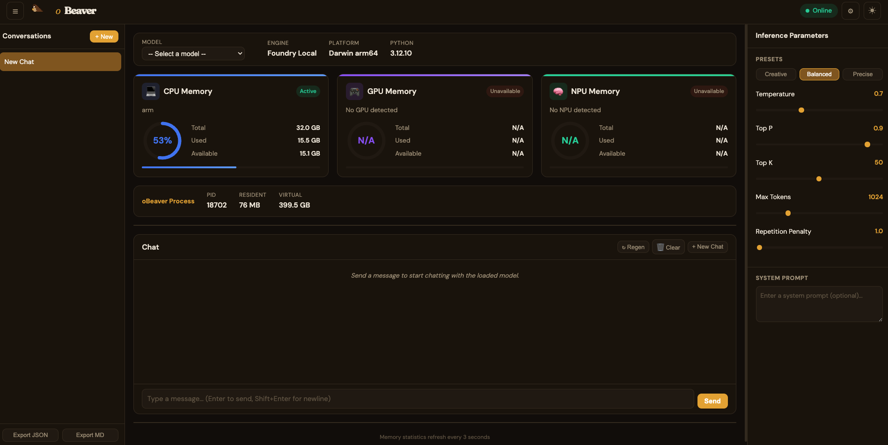
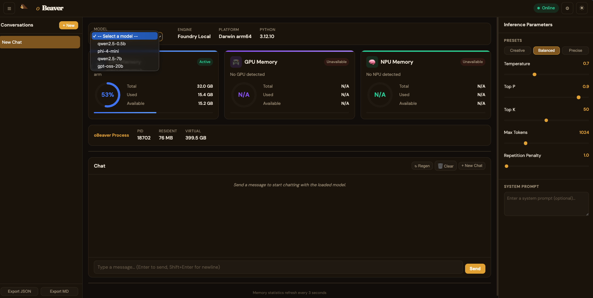
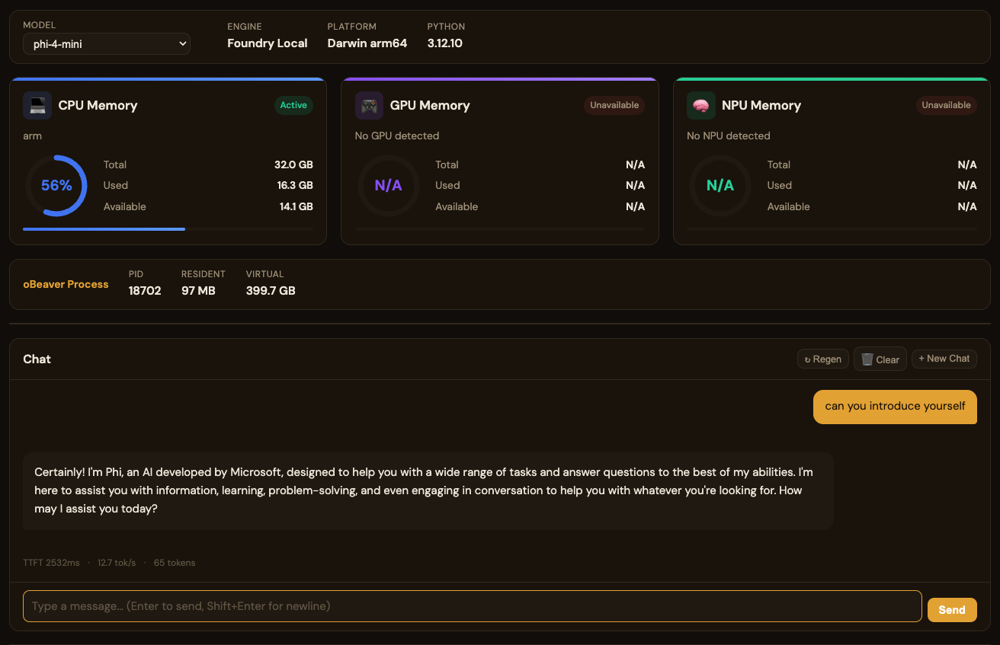
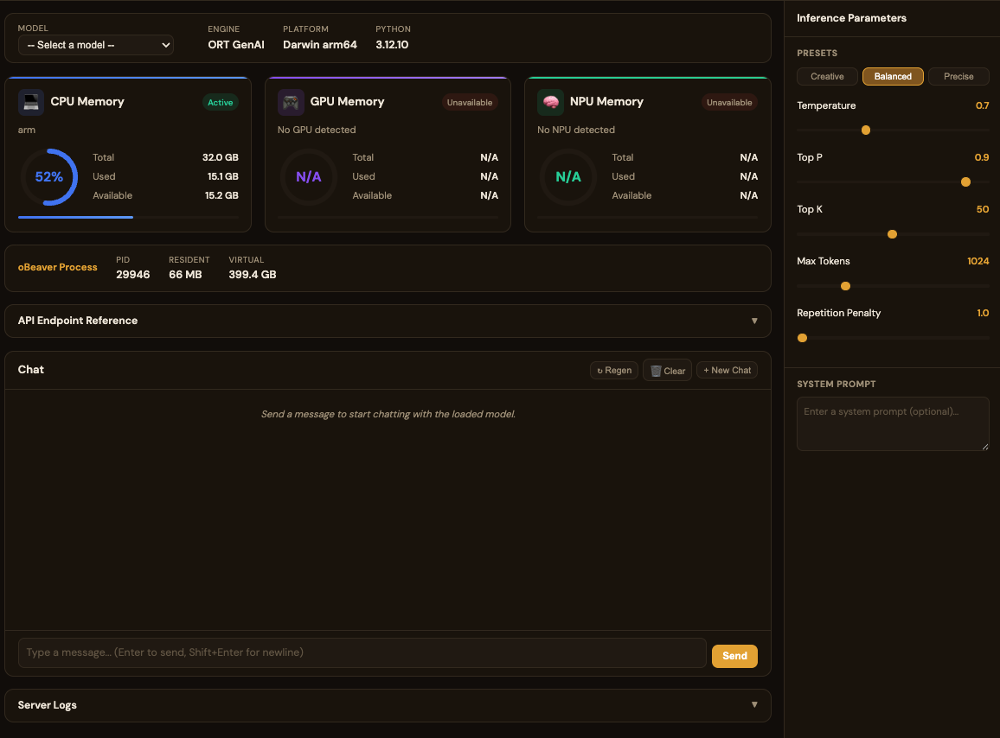
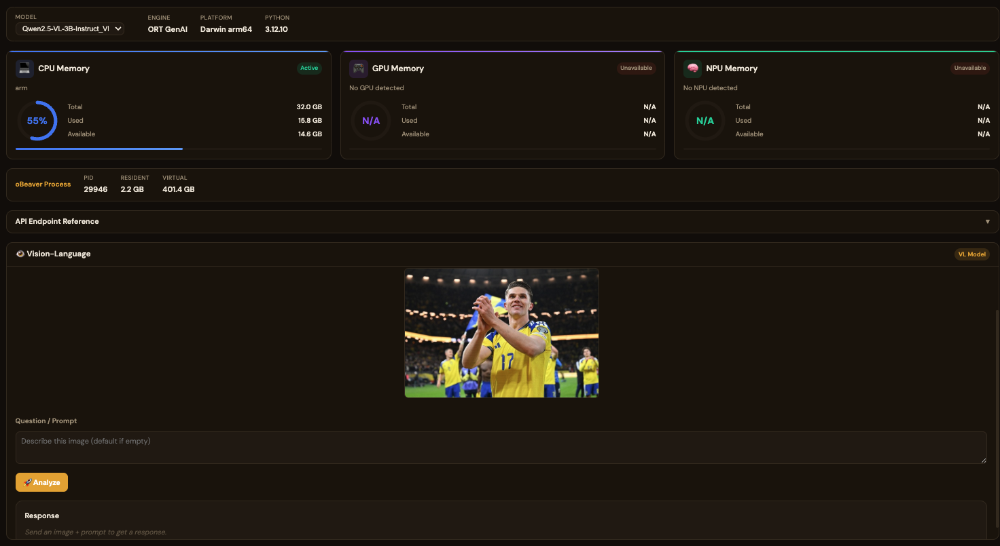
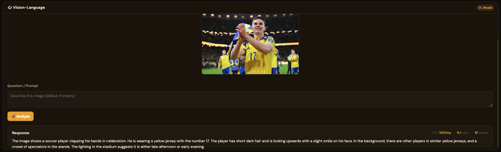

Benchmark & Performance性能基准
oBeaver provides built-in performance metrics and real-time resource monitoring so you can measure inference speed, memory usage, and system health — all from the CLI or the web dashboard.oBeaver 提供内置的性能指标和实时资源监控，你可以测量推理速度、内存使用和系统健康状态——全部可通过 CLI 或网页仪表盘完成。
CLI Timing StatsCLI 计时统计
Add the --timings flag to any obeaver run command to display per-response performance metrics directly in the terminal:在任何 obeaver run 命令中添加 --timings 参数，即可在终端直接显示每次响应的性能指标：
# Foundry Local engine with timing stats
obeaver run Phi-4-mini-instruct-generic-cpu:5 --timings
# ORT engine with timing stats
obeaver run --engine ort ./models/phi3-mini-int4 --timings
# VL (Vision-Language) model with timing stats
obeaver run ./models/Qwen3-VL-2B-Instruct_VL_ONNX_INT4_CPU --timingsAfter each response, the CLI prints a summary line:每次响应后，CLI 会打印一行摘要信息：
TTFT 1398ms · 5.7 tok/s · 26 tokens
Web Dashboard MonitoringWeb 仪表盘监控
You can select an engine and launch the dashboard with the following commands:你可以通过以下指令选择引擎并进入 dashboard：
# Foundry Local engine (default on macOS/Windows) — lists cached Foundry models
obeaver dashboard
# ORT engine — scans ./models for local ONNX GenAI models
obeaver dashboard -e ortOpen http://127.0.0.1:1573/ in your browser, select your model, and start testing. You can use the dashboard to evaluate resource usage across different hardware configurations.在浏览器中打开 http://127.0.0.1:1573/，选择您的模型即可进行测试。您可以在该环境中评估不同硬件的资源占用情况。

Foundry Local DashboardFoundry Local 仪表盘
By default, the dashboard uses the Foundry Local engine and loads models from your configured Foundry Local model directory.默认情况下，dashboard 使用 Foundry Local 引擎，并从您默认路径加载 Foundry Local 引擎的模型。

You can chat with the model and observe the local inference benchmark metrics in real time:你可以进行聊天，查看模型在本地响应的 benchmark 指标：

ORT DashboardORT 仪表盘
When using obeaver dashboard -e ort, you can select any local ONNX model from your default model directory:使用 obeaver dashboard -e ort 时，您可以选择默认路径下的本地 ONNX 模型：

For standard (non-VL) models, the usage is the same as Foundry Local. However, when loading a VL (Vision-Language) model, the chat interface is hidden and replaced with a dedicated VL interface. You can provide a web image URL for testing, such as:非 VL 模型的使用方式与 Foundry Local 一致。但加载 VL（视觉语言）模型时，Chat 界面会隐藏，进入专用的 VL 界面。您需要添加网络照片的链接进行测试，例如：
https://images-sports.now.com/sport/news/6/576/39556158576/39556718725_600x400.jpg

System Resource Gauges系统资源仪表
The dashboard tracks resource utilisation across all available compute hardware with real-time gauges that refresh every 3 seconds:仪表盘跟踪所有可用计算硬件的资源利用率，实时仪表每 3 秒刷新一次：
| Resource资源 | Metrics Shown显示指标 | Description描述 |
|---|---|---|
| CPU MemoryCPU 内存 | Total, Used, Available, % gauge总量、已用、可用、百分比仪表 | System RAM utilisation with processor identification (e.g. ARMv8 Qualcomm, Apple M-series, Intel/AMD)系统 RAM 利用率及处理器识别（如 ARMv8 Qualcomm、Apple M 系列、Intel/AMD） |
| GPU MemoryGPU 内存 | Total, Used, Available, Active/Idle总量、已用、可用、活跃/空闲 | Detected GPU device memory (NVIDIA, AMD, Intel, Qualcomm Adreno)检测到的 GPU 设备内存（NVIDIA、AMD、Intel、Qualcomm Adreno） |
| NPU MemoryNPU 内存 | Total, Used, Available, Active/Idle总量、已用、可用、活跃/空闲 | Neural Processing Unit if available (Intel Meteor Lake, Qualcomm Hexagon)神经处理单元（如可用）（Intel Meteor Lake、Qualcomm Hexagon） |
| Process Memory进程内存 | PID, Resident, VirtualPID、常驻内存、虚拟内存 | Memory consumed by the oBeaver server process itselfoBeaver 服务器进程自身消耗的内存 |
Inference Parameters推理参数
The dashboard sidebar provides real-time tuneable inference parameters with three presets:仪表盘侧边栏提供可实时调整的推理参数，并提供三种预设：
| Parameter参数 | Range范围 | Description描述 |
|---|---|---|
| Temperature | 0 – 2 | Controls randomness of output. Lower = more deterministic控制输出的随机性。越低越确定 |
| Top P | 0 – 1 | Nucleus sampling probability threshold核采样概率阈值 |
| Top K | 1 – 100 | Top-K sampling — limits token choicesTop-K 采样——限制候选 Token 数量 |
| Max Tokens | 1 – 4096 | Maximum number of tokens to generate最大生成 Token 数 |
| Repetition Penalty | 1.0 – 2.0 | Penalises repeated tokens对重复 Token 进行惩罚 |
Creative (high temperature, high top-k)（高温度、高 top-k） · Balanced (default)（默认） · Precise (low temperature, greedy)（低温度、贪心）
Chat Performance Metrics对话性能指标
The built-in chat interface shows real-time performance stats for every model response:内置聊天界面为每次模型响应显示实时性能统计：
Each message displays three key metrics:每条消息显示三个关键指标：
- TTFT (Time to First Token)TTFT（首个 Token 时间） — how quickly the model begins generating after receiving the prompt. Lower is better; strongly influenced by model size and available hardware acceleration.模型收到提示词后开始生成的速度。越低越好；受模型大小和可用硬件加速影响较大。
- tok/s (Tokens per Second)tok/s（每秒 Token 数） — the sustained generation speed. Higher is better; CPU-only inference typically ranges 3-15 tok/s for small models.持续生成速度。越高越好；纯 CPU 推理小模型通常为 3-15 tok/s。
- Token CountToken 计数 — total tokens generated in the response.响应中生成的总 Token 数。
Full Dashboard Overview仪表盘完整概览
The complete dashboard brings together system monitoring, a chat interface, inference parameter controls, conversation history, server logs, and export functionality in a single view:完整的仪表盘将系统监控、聊天界面、推理参数控制、会话历史、服务器日志和导出功能集成在一个视图中：
Dashboard Features Summary仪表盘功能摘要
| Feature功能 | Description描述 |
|---|---|
| Model Selector模型选择器 | Switch between cached models at runtime; NPU-accelerated models are marked with ⚡运行时切换缓存模型；NPU 加速模型以 ⚡ 标记 |
| System Info Bar系统信息栏 | Model name, engine type, platform, Python version, live health status模型名称、引擎类型、平台、Python 版本、实时健康状态 |
| Memory Gauges内存仪表 | CPU / GPU / NPU utilisation with auto-refresh every 3 secondsCPU / GPU / NPU 利用率，每 3 秒自动刷新 |
| Inference Parameters推理参数 | Temperature, Top P, Top K, Max Tokens, Repetition Penalty with presetsTemperature、Top P、Top K、Max Tokens、Repetition Penalty 及预设 |
| Chat Interface聊天界面 | Streaming responses with TTFT, tok/s, and token count per message流式响应，显示每条消息的 TTFT、tok/s 和 Token 数 |
| Conversation History会话历史 | Saved conversations sidebar with system prompt configuration保存的会话侧边栏，支持系统提示词配置 |
| Server Logs服务器日志 | Live request log with method, path, status code, and timing实时请求日志，显示方法、路径、状态码和耗时 |
| Export导出 | Export conversations as JSON or Markdown将会话导出为 JSON 或 Markdown |
Performance Tips性能优化建议
- Choose smaller models for faster TTFT选择较小的模型以获得更快的 TTFT — run
foundry model listto see available models; models likePhi-4-mini-instruct-generic-cpu:5start generating in under a second on modern hardware.运行foundry model list查看可用模型；Phi-4-mini-instruct-generic-cpu:5等模型在现代硬件上不到一秒即可开始生成。 - Use Foundry Local on macOS/Windows在 macOS/Windows 上使用 Foundry Local — it automatically selects the best available accelerator (NPU > GPU > CPU).它会自动选择最佳可用加速器（NPU > GPU > CPU）。
- INT4 quantised ONNX modelsINT4 量化的 ONNX 模型 — provide the best balance of quality and speed for on-device inference.在设备上推理时提供质量和速度的最佳平衡。
- Close other memory-heavy applications关闭其他占用内存的应用 — inference speed is directly affected by available RAM; monitor the CPU Memory gauge in the dashboard.推理速度直接受可用内存影响；可在仪表盘中监控 CPU 内存仪表。
- Monitor the dashboard监控仪表盘 — run
obeaver dashboard(Foundry Local) orobeaver dashboard -e ort(ONNX Runtime GenAI) and keephttp://127.0.0.1:1573/open while benchmarking to track resource utilisation in real time.运行obeaver dashboard（Foundry Local）或obeaver dashboard -e ort（ONNX Runtime GenAI），并在基准测试时保持http://127.0.0.1:1573/打开以实时跟踪资源利用率。